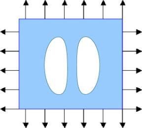
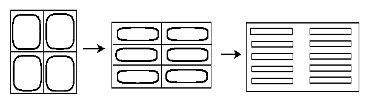

Are two optimal holes better than one?
A. Loadings of the same sign
In this case, two optimized holes have exactly the same effect as one optimal hole of the area equal to the total areas of the two holes. Their shapes, however, differ from ellipses.

These analytical (infinitely differentiable) contours look as kidneys, see (Vigdergauz, 1984). An optimal hole changes its shape to adjust to the inhomogenuity of the stress field caused by the twin hole. Again, we face here an unexpected feature of the optimization problem:
Although the optimal shapes of the holes depend on the mutual position of the holes and their relative sizes, their effect is exactly the same for all values of these parameters!
An elegant method for finding optimal shapes is based on Muskhelishwili potentials and the theory of analytical functions, particularly conformal mapping.
Continuing, we find that any number of optimal inclusions leads to the same strength of the perforated plate. The detailed explanation can be found in the papers by Vigdergauz.
One can also consider a problem with infinitely many inclusions. The slight difference from the previous case is that the periodic system of inclusions has infinite volume, and the fraction of the volume assigned to inclusions is fixed instead.The periodic inclusions (composite) found by Vigdergauz, (see also Grabovsky & Kohn) depend on the elongation of the periodicity cell and on volume fraction of the holes. Each value elongation corresponds to the same strength but to different optimal shapes. When the volume fraction of the void increases, the shapes of optimal inclusions vary from array of ellipses to array of ovals closely inscribed into rectangular periodicity shell. Here, different colors show the shapes of optimal inclusions depending on the volume fractions.
An optimal periodic solution can be explicilty found for any rate of elongation of the periodicity cell. All these solutions correspond to the same value of cost functional. In particular, the structure tends to an optimal "second-rank laminate" when the elongation of the periodicity cell is extreme.
